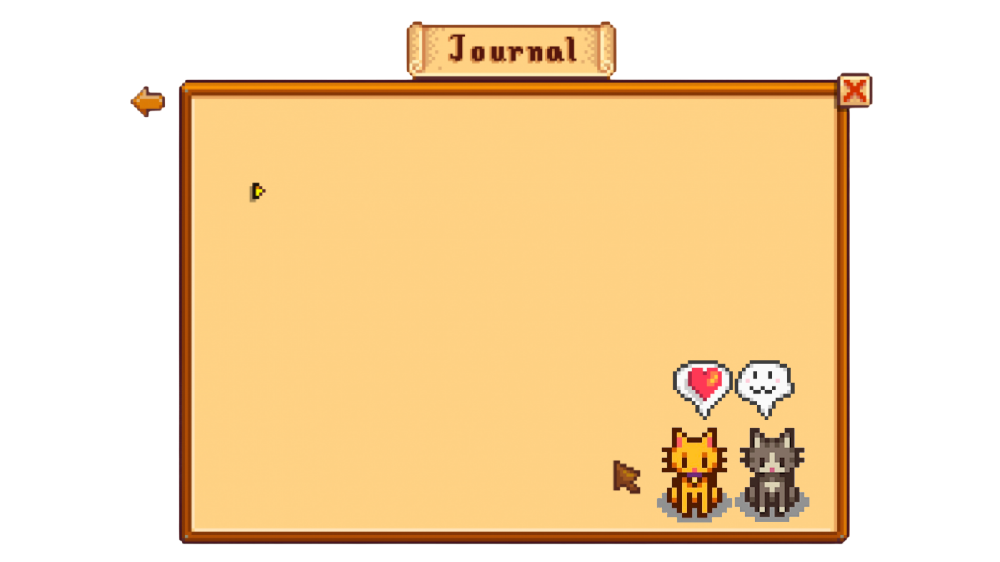

Bem vindo!
Meu nome é Ketlin Oliveira sou desenvolvedora FullStack e estudante de ADS. O principal objetivo desse projeto foi por em prática meus conhecimentos mesclados com algo que gosto muito, Stardew Valley!
Sem fins lucrativos, a ideia é criar um guia interativo e de fácil acesso para jogadores que ainda não completaram o Centro Comunitário, peça importante do jogo.
Novas modificações estão por vir, sinta-se a vontade para deixar o seu feedback nas minhas redes sociais!